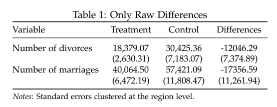

TvsC Stata Command for Tables
Balance tables
One of most common tables you tend to make in economics is a balance table. That is, we have two groups, and want to measure the differences between those groups for several variables. So, here it where tsvc enters. While we can perfom t tests on the equality of means using the ttest command in Stata, sometimes we (or atleast I) want to use several variables and maybe cluster our standard errors without creating a matrix or then export it to excel or latex.
The tvsc tests for statistically significant difference across a group that has two categories. You can install it by typing:
net install tvsc, from("https://raw.githubusercontent.com/rrmaximiliano/tvsc/main") replace
There are some dependencies here, since first the command will estimate a linear regression using the redhdfe package and then will use the estout package to show in your results windows the table.
Example
Let’s use the census data and create a dummy treatment variable:
*** Load dataset
sysuse census, clear
*** Create treatment variable
set seed 01237846
gen treatment = (runiform()<.5)
The syntax of the tsvc is pretty straightforward:
tvsc varlist, by(group)
where varlist is one or multiple variables that we would like to test for the, and in by() we add our treatment (group) variable. The command expects to have a treatment variable of the form 0 = control, and 1 = treatment.
tvsc divorce marriage, by(treatment)
---------------------------------------------------
Treatment Control Difference
---------------------------------------------------
divorce 18,379.07 30,425.36 -12046.29
(2,630.31) (7,183.07) (7,011.02)
marriage 40,064.50 57,421.09 -17356.59
(6,472.19) (11,808.47) (12,747.12)
---------------------------------------------------
Options
If you don’t include any option, you get the raw differences between treatment and control groups. You can use sd to show the standard deviations instead of the standard errors for both treatment and control groups but not for the difference. You can use the option clus_id() to estiamte clustered standard errors, and if you would like to include a 4th column using fixed effects, you can use the option strat_id()
- Standard deviations instead of standard errors for treatment and control groups:
tvsc divorce marriage, by(treatment) clus_id(region)
---------------------------------------------------
Treatment Control Difference
---------------------------------------------------
divorce 18,379.07 30,425.36 -12046.29
(2,630.31) (7,183.07) (7,374.89)
marriage 40,064.50 57,421.09 -17356.59
(6,472.19) (11,808.47) (11,261.94)
---------------------------------------------------
- Clustered standard errors for the difference
tvsc divorce marriage, by(treatment) clus_id(region)
---------------------------------------------------
Treatment Control Difference
---------------------------------------------------
divorce 18,379.07 30,425.36 -12046.29
(2,630.31) (7,183.07) (7,374.89)
marriage 40,064.50 57,421.09 -17356.59
(6,472.19) (11,808.47) (11,261.94)
---------------------------------------------------
- Fourth column using fixed effects:
tvsc divorce marriage, by(treatment) clus_id(region) strat_id(region)
----------------------------------------------------------------
Treatment Control Diff FE Diff
----------------------------------------------------------------
divorce 18,379.07 30,425.36 -12046.29 -13692.48
(2,630.31) (7,183.07) (7,374.89) (8,755.31)
marriage 40,064.50 57,421.09 -17356.59 -20555.04
(6,472.19) (11,808.47) (11,261.94) (12,263.35)
----------------------------------------------------------------
Exporting
While the command does not have a built-in function that exports the results to excel or latex, I recommend using esttab after running tvsc as follows:
*** ssc install estout, replace
// Latex Table
local style "nomtitle nonumbers noobs b(3) se(3) booktabs"
quietly tvsc divorce marriage, by(treatment) clus_id(region) stra_id(region) labels
esttab, `style' cells("mu_2(fmt(%9.2fc)) mu_1(fmt(%9.2fc)) mu_3(fmt(%9.2fc))" "se_2(par) se_1(par) se_3(par)")
And this should give you a latex output like this:
{
\def\sym#1{\ifmmode^{#1}\else\(^{#1}\)\fi}
\begin{tabular}{l*{1}{ccc}}
\toprule
& mu\_2/se\_2& mu\_1/se\_1& mu\_3/se\_3\\
\midrule
divorce & 18,379.07& 30,425.36& -12046.29\\
& (2,630.31)& (7,183.07)& (7,374.89)\\
marriage & 40,064.50& 57,421.09& -17356.59\\
& (6,472.19)& (11,808.47)& (11,261.94)\\
\bottomrule
\end{tabular}
}
In this case, to show the results you need to include the cells options where mu_2 is the treatment, mu_1 the control group, and mu_3 the difference. Likewise, se_2, se_1, and se_3 for the standard errors. If you want to get the standard deviations instead of the standard errors in your latex table, just change se_ to sd_. And finally, if you used the strat_id option, the difference with fixed effects can be retrieved using mu_4.
Personally, I always prefer to have only the body of the latex table instead of the full environment, and I get this by modifying the esttab options like this:
// Latex Table, just the body
local style "label nolines nogaps fragment nomtitle nonumbers noobs nodep collabels(none) booktabs b(3) se(3)"
quietly tvsc divorce marriage, by(treatment) clus_id(region) stra_id(region) labels
esttab, `style' cells("mu_2(fmt(%9.2fc)) mu_1(fmt(%9.2fc)) mu_3(fmt(%9.2fc))" "se_2(par) se_1(par) se_3(par)")
And you should get this outputs:
Number of divorces & 18,379.07& 30,425.36& -12046.29\\
& (2,630.31)& (7,183.07)& (7,374.89)\\
Number of marriages & 40,064.50& 57,421.09& -17356.59\\
& (6,472.19)& (11,808.47)& (11,261.94)\\
And the compiled tex document will look like this:

This pdf contains more examples, and the TeX code can be found here.
If you have any comment or suggestion for this command, open an issue in the original repository: https://github.com/RRMaximiliano/tvsc/issues
Appendix: dofile
*** Installing the pkg
net install tvsc, from("https://raw.githubusercontent.com/rrmaximiliano/tvsc/main") replace
*** Globals
global stars1 "label nolines nogaps fragment nomtitle nonumbers noobs nodep star(* 0.10 ** 0.05 *** 0.01) collabels(none) booktabs b(3) se(3)"
*** Load dataset
sysuse census, clear
*** Create treatment variable
set seed 01237846
gen treatment = (runiform()<.5)
*** TvsC
local vars ///
divorce ///
marriage
quietly tvsc divorce marriage, by(treatment) clus_id(region) stra_id(region) labels
esttab, ${stars1} cells("mu_2(fmt(%9.2fc)) mu_1(fmt(%9.2fc)) mu_3(fmt(%9.2fc))" "se_2(par) se_1(par) se_3(par)")
##
## . *** Installing the pkg
## . net install tvsc, from("https://raw.githubusercontent.com/rrmaximiliano/t
## > vsc/main") replace
## checking tvsc consistency and verifying not already installed...
## all files already exist and are up to date.
##
## .
## . *** Globals
## . global stars1 "label nolines nogaps fragment nomtitle nonumbers noo
## > bs nodep star(* 0.10 ** 0.05 *** 0.01) collabels(none) booktabs b(3) se(3)"
##
## .
## . *** Load dataset
## . sysuse census, clear
## (1980 Census data by state)
##
## .
## . *** Create treatment variable
## . set seed 01237846
##
## . gen treatment = (runiform()<.5)
##
## .
## . *** TvsC
## . local vars ///
## > divorce ///
## > marriage
##
## .
## . quietly tvsc divorce marriage, by(treatment) clus_id(region) stra_id(regi
## > on) labels
##
## . esttab, ${stars1} cells("mu_2(fmt(%9.2fc)) mu_1(fmt(%9.2fc)) mu_3(fmt(%9.
## > 2fc))" "se_2(par) se_1(par) se_3(par)")
##
## Number of divorces & 18,379.07& 30,425.36& -12046.29\\
## & (2,630.31)& (7,183.07)& (7,374.89)\\
## Number of marriages & 40,064.50& 57,421.09& -17356.59\\
## & (6,472.19)& (11,808.47)& (11,261.94)\\
##
## .